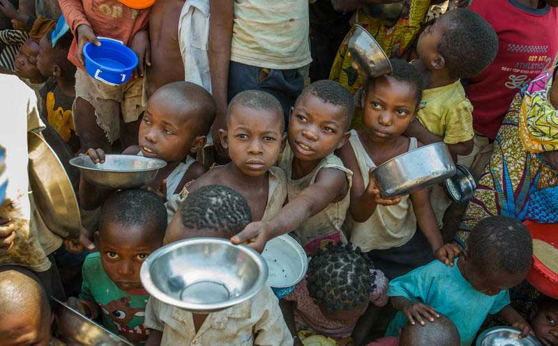
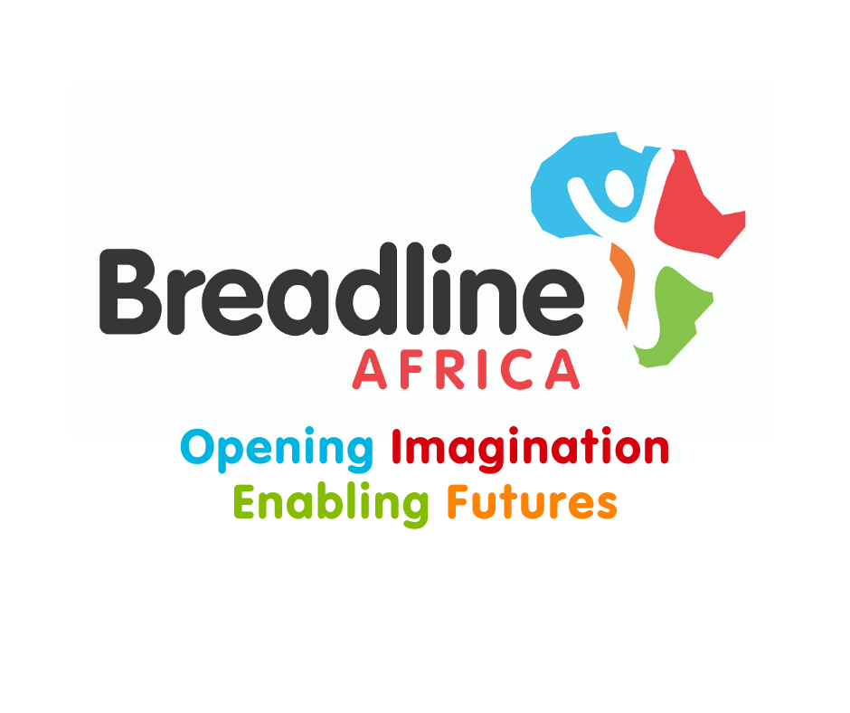

Throughout the entire world, over 800 million people in the world do not attain a basic proficiency level in math and literacy, even though around ⅔ of them have some source of education.
Poverty is the one of the biggest causes worldwide for people not attending schools and getting an education. A study done by UNICEF shows that children living under the poverty line are almost 5 times more likely to drop out of school after primary school rather than the richer population.
A temporary solution to these problems is setting up more support for those in third world countries who require shelter, food and water. In order for people to have the time to attend school, we must address what is happening at home and supply them with the basic necessities of life.
Putting this into perspective, the U.N. found that feeding every homeless person in the U.N. alone would cost around 267 billion dollars per year, including food, irrigation and infrastructure.
One of the largest problems with children getting an education is location. Children living in rural communities are almost 2 times more likely to drop out of school before primary than children in urban areas.
Without any official form of education, people in poorer communities will be left behind by technological advancements and future employment.
A solution to this matter is portable schools. Breadline Africa, an organization based on helping to fund schooling for those in need in Africa, are already dealing with this matter.
They are using an ingenious plan of modifying and using old shipping containers to provide a classroom for South Africa children. So far, they have set up over 350 storage containers in 9 different provinces of South Africa.